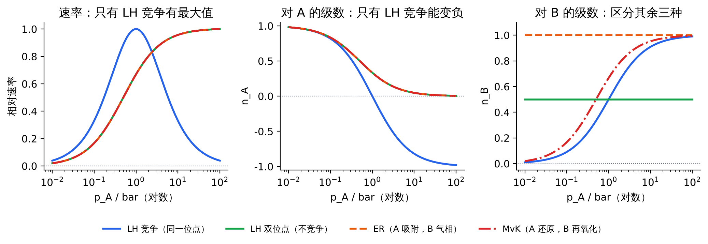
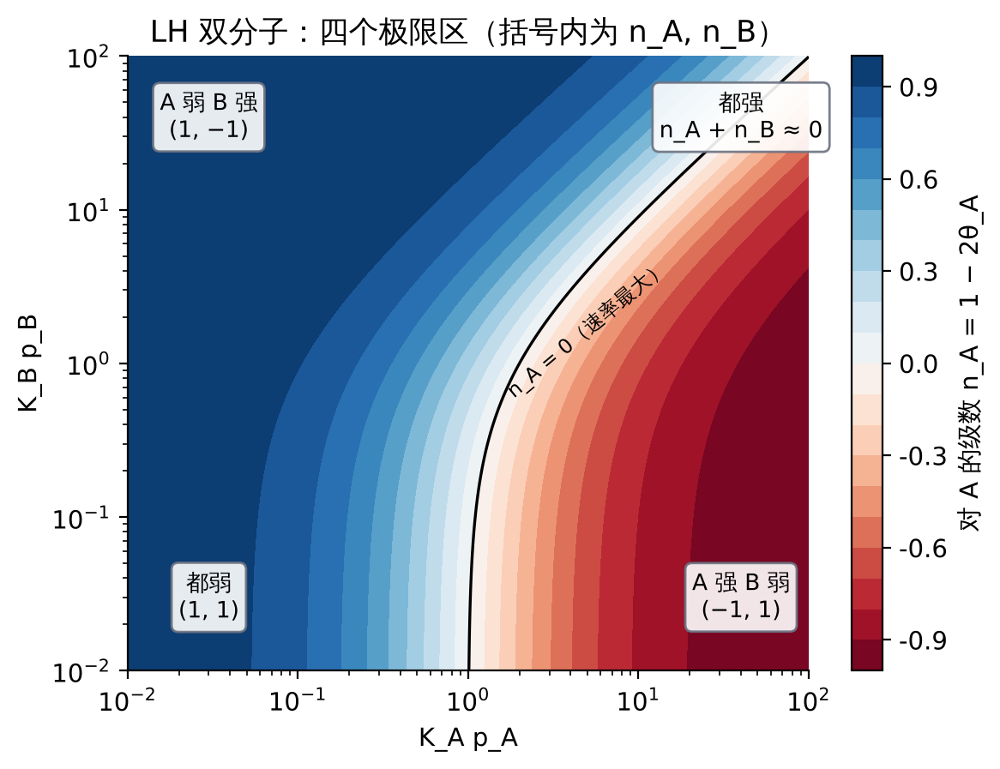
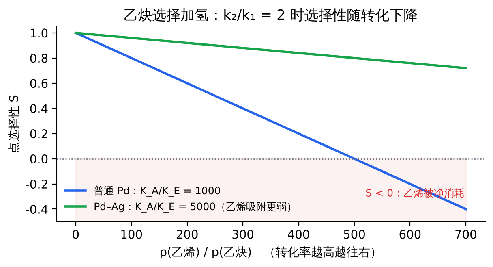

11 吸附方式、覆盖度与反应机理：三个层面
先分清层面
缔合 / 解离吸附和 LH / ER / MvK 不是一回事。第 1–4 节只讲吸附和脱附，没有任何反应；第 5–8 节才讲反应机理。
| 层面 | 回答什么 | 选项 |
|---|
| ① 吸附方式 | 分子吸附时断不断开 | 缔合（CO → CO*）；解离（H₂ → 2H*） |
| ② 吸附了多少 | 某个压力下 θ 是多少 | Langmuir（默认）、Temkin、Freundlich、BET |
| ③ 反应机理 | 表面物种怎样变成产物 | LH、ER、MvK |
写速率式分两步：先看每个物种怎么吸附（缔合写 Kp，解离写 √(Kp)），再看机理决定怎么组合（LH：kθ_Aθ_B；ER：kθ_Ap_B；MvK：氧化还原稳态）。
| 组合 | 例子 | 速率式里的体现 |
|---|
| LH + 都缔合 | 一般的 A + B → P | \(r=kK_AK_Bp_Ap_B/(1+K_Ap_A+K_Bp_B)^2\) |
| LH + 一个解离 | CO 氧化（O₂ 解离）；乙烯加氢（H₂ 解离） | 解离物种写 √(Kp)，分母里也是 √(Kp)；级数 ½ − θ |
| ER + 缔合 / 解离 | A 吸附，B 从气相撞上来 | \(r=k\theta_Ap_B\)，θ_A 用对应的 Langmuir 式 |
| MvK | 氧化物上的选择氧化 | θ_Ox 由还原和再氧化的稳态决定，不用 Langmuir 等温式 |
覆盖度什么时候和反应无关：吸附准平衡
推导：稳态覆盖度与 K_eff
以 A → B 为例，A* 的进 = 吸附，出 = 脱附 + 反应：
$$k_ap_A\theta_*=k_d\theta_A+k_r\theta_A\ \Rightarrow\ \frac{\theta_A}{\theta_*}=K_{eff}\,p_A,\qquad K_{eff}=\frac{k_a}{k_d+k_r},\qquad \theta_A=\frac{K_{eff}p_A}{1+K_{eff}p_A}$$
| 情况 | K_eff | θ_A 由什么决定 | 对应 |
|---|
| 反应很慢 k_r ≪ k_d | ≈ k_a/k_d = K | 吸附平衡，与反应无关 | 表面反应控制（LH、ER 的标准推导） |
| 两者相当 | k_a/(k_d + k_r) | 吸附、脱附、反应三者共同决定 | 一般情况 |
| 反应很快 k_r ≫ k_d | ≈ k_a/k_r | A 没来得及脱附就被反应掉，θ 很低 | 吸附控制，r ≈ k_ap_A，恒为一级 |
数值感受k_ap_A = 1 s⁻¹，k_d = 1 s⁻¹，Langmuir 值 θ = 0.5。k_r = 0.01 s⁻¹ 时 θ = 1/(1 + 1.01) ≈ 0.50；k_r = 10 s⁻¹ 时 θ = 1/12 ≈ 0.08。
两个提醒
- 从动力学数据拟合出的 K（如题 11 的 K_A ≈ 2 bar⁻¹）严格说是 K_eff。只有反应远慢于脱附时，它才等于吸附等温线测出的真实 K；两者对不上，说明吸附准平衡不成立。
- 即使吸附处于准平衡，谁在抢位点（分母里有哪些项）也由机理决定：LH 里 A、B 都在分母；ER 里 B 不吸附，不在分母；产物吸附要加 K_Pp_P；MvK 的位点状态完全不同。
12 综合对比总表
12.1 同一反应 A + B → P 的五种机理
| 机理 | θ_A | θ_B | 速率 r | n_A | n_B | 级数之和 |
|---|
| LH 竞争（都缔合） | K_Ap_A/D | K_Bp_B/D | kθ_Aθ_B | 1 − 2θ_A（+1 → −1） | 1 − 2θ_B | n_A + n_B = 2θ_* |
| LH 竞争（B₂ 解离） | K_Ap_A/D′ | √(K_Bp_B)/D′ | kθ_Aθ_B | 1 − 2θ_A | ½ − θ_B（+½ → −½） | n_A + 2n_B = 2θ_* |
| LH 双位点 | K_Ap_A/(1+K_Ap_A) | K_Bp_B/(1+K_Bp_B) | kθ_Aθ_B | 1 − θ_A（1 → 0） | 1 − θ_B | 2 − θ_A − θ_B |
| ER（A 吸附） | K_Ap_A/(1+K_Ap_A) | 0（不吸附） | kθ_Ap_B | 1 − θ_A | 恒为 1 | 2 − θ_A |
| MvK | θ_Ox = k_Bp_B/(k_Ap_A + k_Bp_B) | k_Ap_Aθ_Ox | θ_Ox | 1 − θ_Ox | 恒为 1 |
D = 1 + K_Ap_A + K_Bp_B；D′ = 1 + K_Ap_A + √(K_Bp_B)。数值对比见题 21。

图 F8 固定 p_B 改变 p_A：LH 竞争有最大值、对 A 可为负级数；双位点 LH、ER、MvK 对 A 的响应完全重合（都是 1 → 0），只能靠对 B 的级数区分
判断流程
- 任何一个级数为负 → LH 竞争吸附（两种吸附物抢同一种位点）。
- 对 B 恒为一级、与 p_A 无关 → ER。
- 两个级数都在 0–1 之间且之和恒为 1，增大 p_A 时 n_B 变大 → MvK。
- 两个级数都在 0–1 之间，n_B 只随 p_B 变、不随 p_A 变 → 双位点 LH。
- 对某反应物的级数约为 ½ 或不超过 ½ → 它解离吸附。
12.2 LH 双分子的四个极限区
| 区域 | 条件 | 表面 | 近似速率式 | (n_A, n_B) |
|---|
| 都弱 | K_Ap_A, K_Bp_B ≪ 1 | 几乎全空 | \(kK_AK_Bp_Ap_B\) | (1, 1) |
| A 强 B 弱 | K_Ap_A ≫ 1 + K_Bp_B | 几乎全是 A | \(kK_Bp_B/(K_Ap_A)\) | (−1, 1) |
| A 弱 B 强 | K_Bp_B ≫ 1 + K_Ap_A | 几乎全是 B | \(kK_Ap_A/(K_Bp_B)\) | (1, −1) |
| 都强 | K_Ap_A, K_Bp_B ≫ 1 | 没有空位 | \(kK_AK_Bp_Ap_B/(K_Ap_A+K_Bp_B)^2\) | n_A ≈ −n_B = θ_B − θ_A |

图 F9 n_A 在 (K_Ap_A, K_Bp_B) 平面上的分布；黑线 n_A = 0 即速率最大的位置
配合表观活化能由 \(E_{app}=E_{true}+n_A\Delta H_A+n_B\Delta H_B\)：在"A 强 B 弱"区 E_app ≈ E_true + |ΔH_A| − |ΔH_B|，A 吸附越强，表观活化能越大（要先让 A 脱附腾位点）；在"都弱"区 E_app = E_true + ΔH_A + ΔH_B，明显偏小。
12.3 单分子 A → B 的三种速控步
见第 10 节表格。记忆要点：表面主要物种依次是空位 / A* / B*；对 A 的级数依次是1 / 1 − θ_A / ≈ 0；加入产物的影响依次是抑制 / 抑制 / 几乎无。数值对比见题 22。
13 选择性
13.1 平行竞争：两种反应物抢同一种位点
推导
A → P_A、B → P_B 在同一种位点上进行：\(r_A=k_A\theta_A=\dfrac{k_AK_Ap_A}{D}\)，\(r_B=\dfrac{k_BK_Bp_B}{D}\)，分母相同，相除时约掉：
$$\frac{r_A}{r_B}=\frac{k_A\,K_A\,p_A}{k_B\,K_B\,p_B}$$
意义
选择性由 k·K 决定，不只看本征反应速率 k。一个本征反应较慢、但吸附很强的反应物，在混合物中反而可能优先反应，还会把另一个反应物挤下表面——单独测时很快的反应，在混合物里可能慢很多。见题 24。
13.2 连串反应：A → B → C，想要中间产物 B
推导：点选择性
A、B 竞争同一种位点（加氢时 H 的覆盖度对两步相同，约掉）：\(r_1=k_1\theta_A\theta_H\)，\(r_2=k_2\theta_B\theta_H\)。每消耗一个 A 净得到的 B：
$$S=\frac{r_1-r_2}{r_1}=1-\frac{k_2\,K_B\,p_B}{k_1\,K_A\,p_A}$$
意义
- 只要 A 吸附得比 B 强得多（K_A ≫ K_B），A 就把 B 挤下表面，B 来不及继续反应，选择性很高。这叫热力学选择性。
- 随着转化进行，p_B/p_A 越来越大，S 越来越低；A 快耗尽时 S 降到 0 以下，B 被净消耗（过度加氢）。所以连串反应要在 A 完全转化之前停下。
- 另一面是机理选择性：已生成的 B* 是先脱附还是先继续反应，取决于 k_d,B 与 k₂θ_H 的相对大小。

图 F10 乙炔选择加氢的点选择性随 p(乙烯)/p(乙炔) 的变化；Pd–Ag 削弱乙烯吸附，选择性下降得慢
应用：乙炔选择加氢乙烯物流中含少量乙炔，要把乙炔加成乙烯而不把乙烯加成乙烷。工业上用 Pd–Ag 合金（Ag 隔开 Pd 原子、削弱乙烯吸附）或加入少量 CO 作调节剂，降低 K_E 或 k₂，从而提高选择性。见题 25。
13.3 温度对选择性的影响
公式
$$\frac{r_2}{r_1}\propto\exp\!\left[-\frac{E_{app,2}-E_{app,1}}{RT}\right]$$
升温有利于表观活化能大的那条路径
注意这里是表观活化能，包含吸附热项（第 9 节）。覆盖度一变，E_app 跟着变，选择性随温度的变化也就不一定单调。例：两路径 E_app 相差 40 kJ/mol，从 400 K 升到 500 K，速率比变为原来的 exp[40000/8.314 × (1/400 − 1/500)] ≈ 11 倍。
13.4 结构因素：集团效应与强金属–载体相互作用（SMSI）
SMSI 是什么
把 Pt、Rh 等金属负载在可还原载体（TiO₂、CeO₂、Nb₂O₅，ZrO₂ 较弱）上，高温还原（约 500 °C，H₂）后，H₂、CO 化学吸附量大幅下降，但颗粒大小不变。原因是载体爬上来把金属包住了。氧化处理后再低温还原，吸附能力可以恢复，是可逆的。
机理三步
- 氢溢流还原载体：H₂ 在 Pt 上解离，H 原子溢流到 TiO₂ 上，把 Ti⁴⁺ 还原成 Ti³⁺、生成氧空位：O_O^× → V_O^•• + 2e′ + ½O₂，得到缺氧的 TiOₓ（x < 2）。
- TiOₓ 能移动，且和 Pt 作用强：Ti³⁺ 与 Pt 成键（界面处可形成 Pt–Ti 合金），容易在 Pt 表面铺开（润湿）。
- 包覆降低表面能：低表面能的氧化物盖住高表面能的金属，总表面能下降，这是热力学驱动力。
氧化时 TiOₓ 变回 TiO₂，与 Pt 作用变弱、润湿变差，包覆层收缩，金属表面重新露出。SiO₂、Al₂O₃ 不可还原，所以没有典型的 SMSI。
对速率和选择性的影响
- 封堵金属表面：化学吸附量下降——此时用化学吸附测分散度会严重低估。
- 集团效应：需要一大片连续金属原子的反应（如氢解，C–C 断裂）被强烈抑制，因为包覆层把金属表面切碎了。
- 界面新位点：金属–TiOₓ 交界处的 Ti³⁺ 和氧空位能抓住 C=O 中的 O，活化 C=O 键。CO 加氢以及不饱和醛中 C=O 的选择加氢（如巴豆醛 → 巴豆醇）活性和选择性提高。
- 与烧结的区分：两者都使吸附量下降；烧结时电镜看到颗粒长大且基本不可逆，SMSI 时颗粒大小不变、外面多一层薄壳，氧化后可恢复。